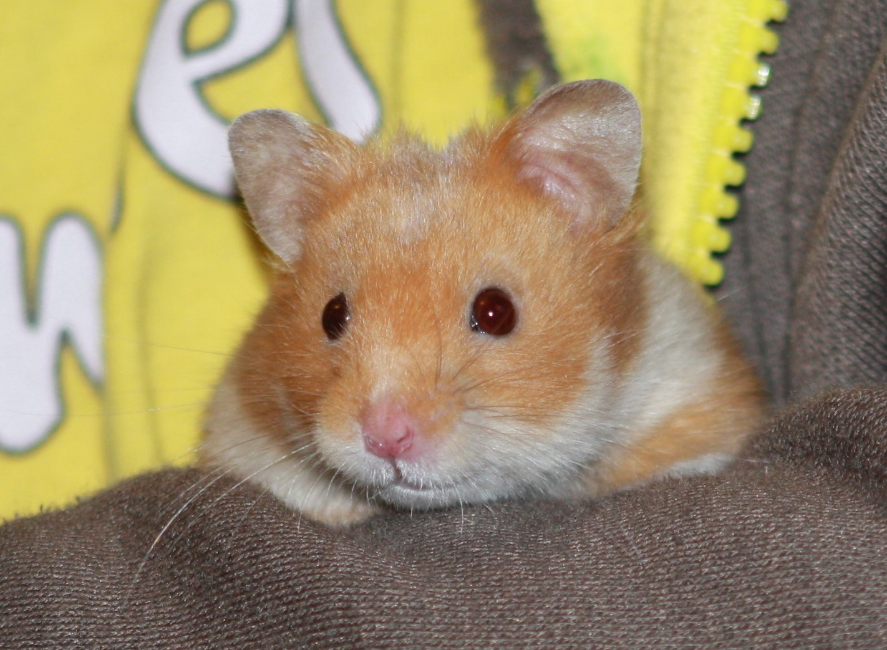

09-Jun-2017 | Milku
but these aren't due to politics.
It's Day 9 of 30 Days Wild, a welcome distraction from all the election news. I'm still peeved that I can't vote. No one even showed a picture of a hamster with a polling station. Who wants to see dogs, cats, even a hedgehog! A hamster would make everyone feel a bit better on election day.
Apparently there’s always room in a garden for more plants. And sometimes you don’t even have to plant seeds but can take a short cut and use a bit of a plant to make another. Well, I’m not convinced, but my little humans were so roamed the garden to pick pieces off the jostaberry, rosemary and box bushes. The book that gives us all the outdoors-y sort of ideas actually suggested using lavender, but the girls couldn’t find any of that.
They put some compost into pots and then prepared the cuttings. What they needed was newly grown parts of the plant. They stripped off some of the leaves and cut the bottom of the stem at an angle, just below where a leaf had been growing. The book suggested just putting the cuttings straight into the compost and covering the pot with a bag. But my humans are not great at following instructions. They dipped the stems in rooting compound before they planted them in the soil. And they haven’t bothered covering them up. They’re just outside…exposed to the elements. They’ll be lucky if anything grows.
One of my little humans is heading off to Guide Camp this weekend. So she's sure to be doing something in the great outdoors. I can't wait to hear what the others are going to do.